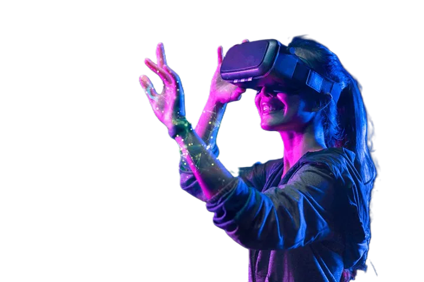

XR-vuosi 2026
Tämän vuoden XR-uutisissa kilpailu siirtyi headseteista kevyisiin laseihin. Meta karsi Reality Labsia ja siirsi Horizon Worldsin mobiiliin, Snap toi AR-lasinsa myyntiin, ja älylasien yksityisyys nousi sääntelyn pääteemaksi Euroopassa. Käyttö kasvaa siellä, missä hyöty on mitattavissa: terveydenhuollossa, puolustuksessa ja teollisuudessa.
Luvut ja lasien hinnat löytyvät sivulta XR-kehitys lukuina, standardit ja EU-säädökset sivulta Standardit ja sääntely.

Kokonaiskuva viidessä aiheessa
— tapahtumaa, joista — liittyy Eurooppaan (eurooppalainen toimija, viranomainen tai markkina). Valitse aihe, niin aikajana ja taulukko alempana rajautuvat siihen. Eurooppa-rajaus on aikajanan otsikon vieressä.
Aikajana
Näytetään: kaikki aiheet.
Kaikki tapahtumat
| Ajankohta | Aihe | Tapahtuma | Lisätieto |
|---|
Valinnalla ei löytynyt tapahtumia.
Huomioita
- Taulukon ajankohdat ovat neljänneksiä (Q1–Q4), ja ne perustuvat uutisten ja artikkelien julkaisuajankohtiin.
- Reality Labsin irtisanomisten laajuus vaihtelee lähteestä riippuen.
- Connectin VR Glasses ja vuotanut Phoenix saattavat olla sama hanke, mutta Meta ei vahvistanut sitä.
Viimeksi päivitetty: —. Anna Eloranta (Oulun ammattikorkeakoulu) on koonnut aineiston julkisista XR-uutiskirjeistä sekä lähteistä.